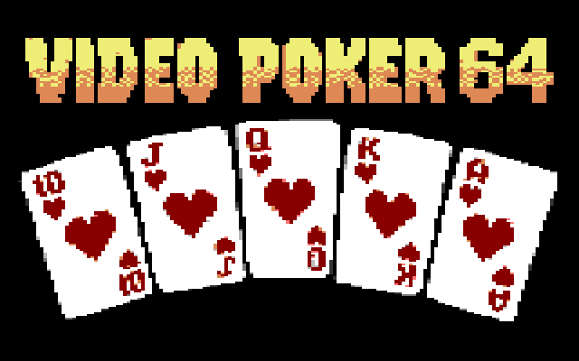
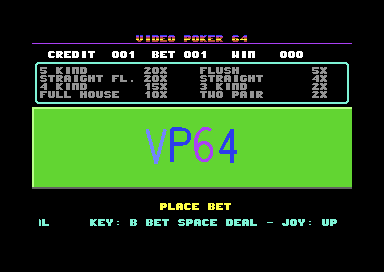
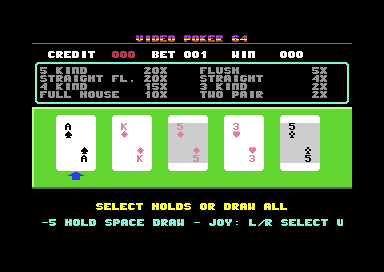
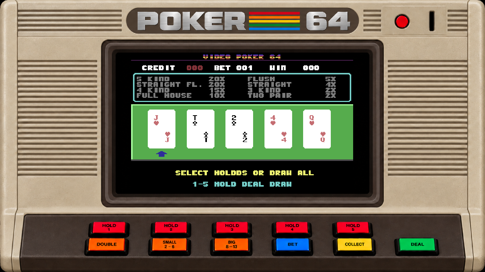

Hold what matters.
Keep any combination of the five cards and replace the rest. The game suggests holds for natural pairs, two pairs, three of a kind, and four of a kind; you can change every choice.
VP64 / C64 video poker
Five cards. One draw. The choice to take the win or risk it again. A Commodore 64 game with the feel of classic 90s video poker.
Play in browser ↗
Actual title artwork converted for the game's C64 cartridge.
01 / The game
VP64 turns the familiar video poker loop into a brisk C64 game. Choose a stake, deal five cards, decide what to hold, then draw once. Card flights, table-clearing animations, SID cues, and a rotating Hall of Fame give each short session its own rhythm.
Keep any combination of the five cards and replace the rest. The game suggests holds for natural pairs, two pairs, three of a kind, and four of a kind; you can change every choice.
Bets of one or two use a 52-card deck. Bets of three to five add a fully wild joker, changing what a winning hand can become.
Three Hall of Fame leagues compare sessions by net credits and hands played. Their scores live in memory and reset when the C64 powers off.
02 / In play
These frames were captured from the running PAL C64 game in VICE. The first shows bet selection; the second shows a freshly dealt hand, ready for hold choices.


Captured from vp64u.prg in VICE; frames are shown with their original C64 display border.

The macOS version presents the C64 game inside a clickable Poker 64 cabinet. This frame shows the full app-rendered cabinet during hold selection.
03 / One round
Every hand follows a clear cabinet rhythm, with your choices at the center.
Cycle through one to five credits, limited by what you have in the bank.
Cards fly onto the table one by one, each with its own landing cue.
Toggle any cards, then replace the ones left unheld in a single draw.
Take the virtual-credit win, or try the small-or-big double-up when eligible.
VP64 uses virtual credits only. It has no real-money support.
04 / How to play
VP64 runs on a classic PAL C64 and in compatible emulators. It supports a port 2 joystick or 1351-style proportional mouse, with keyboard controls available throughout.
Insert a virtual credit at the idle cabinet, then enter the betting screen.
Cycle the affordable bet, then deal or draw.
Toggle the matching card holds before the draw.
Choose to collect or enter double-up. During double-up, choose small or big.
Pay out the virtual-credit bank during an active session, or toggle background music.